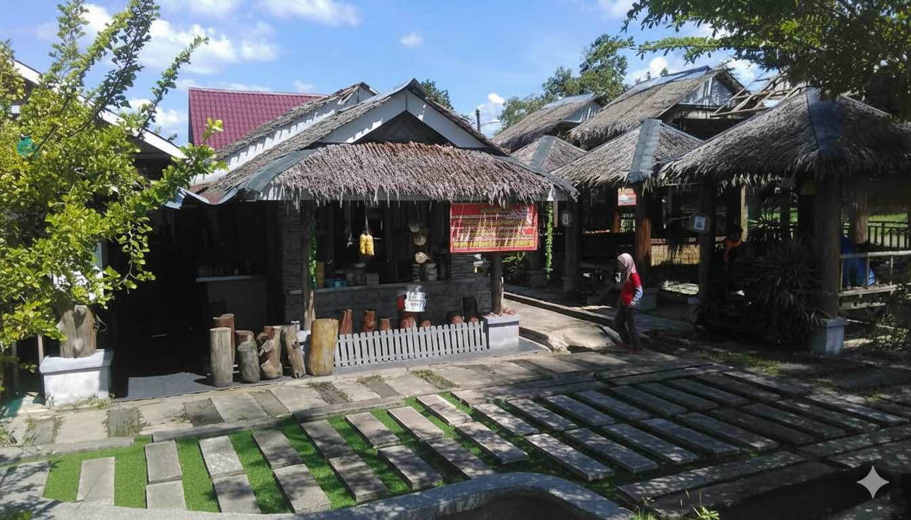

D'Pohon Restaurant began as a small dream — to share the authentic taste of northern Malaysian cuisine with locals and travelers alike. Founded in 2010, we started as a humble stall under a shady tree, which inspired our name, “D'Pohon.”
Our philosophy is simple: use fresh ingredients, preserve traditional recipes, and treat every customer like family. We take pride in being part of the Guar Chempedak community, offering a place for people to relax, dine, and create memories together.
From our famous “Ais Kacang Salji” that everyone talks about, to the rich and flavorful “Laksa Ikan Sekoq,” every dish is prepared with love and care. Thank you for supporting us!
